학습 목표 (Learning Objectives)
- 1외부 은하의 스펙트럼 관측 자료를 분석하여 적색 편이량($z$)과 후퇴 속도($v$)를 구하고, 허블-르메트르 법칙($v = Hr$)을 유도할 수 있다. (수업 PPT 학습목표)
- 2허블 상수($H$)의 물리적 의미를 이해하고, 이를 이용하여 우주의 나이($T = 1/H$)와 관측 가능한 우주의 크기($R = c/H$)를 계산할 수 있다.
- 3풍선 표면 모형을 통해 우주에는 팽창의 중심이 없음을 설명하고, 우주 팽창을 지지하는 관측 증거들을 설명할 수 있다.
핵심 개념 체크리스트
학습을 마친 핵심 개념을 체크하며 복습해보세요!
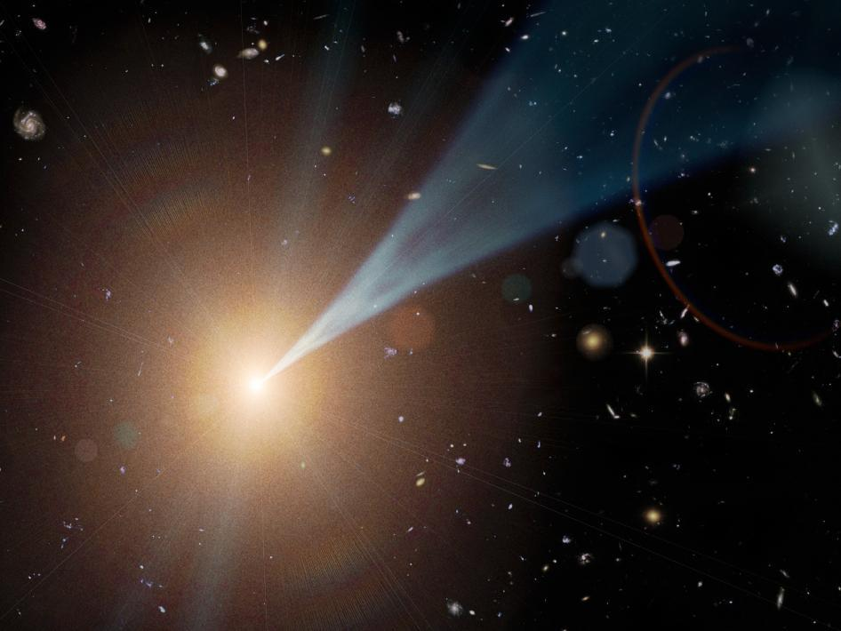
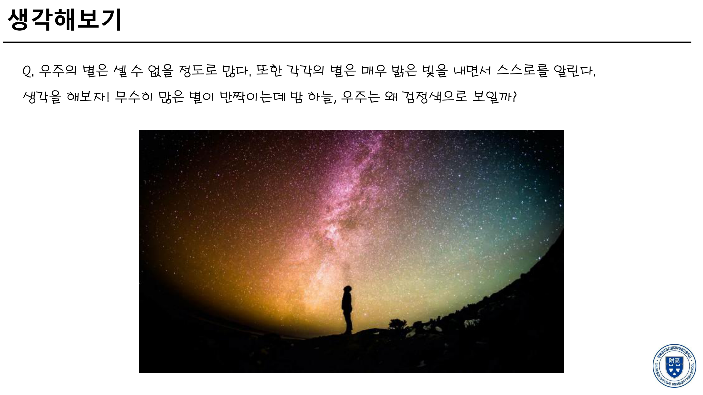
우주의 역사는 약 138억 년으로 유한합니다. 아무리 별이 많아도 138억 광년보다 더 먼 곳에 있는 별빛은 아직 지구에 도착조차 하지 못했습니다!
우주 공간 자체가 팽창함에 따라 먼 천체에서 오는 빛의 파장이 길어져(적색 편이), 에너지가 큰 가시광선 영역에서 에너지가 훨씬 작은 적외선이나 마이크로파 영역으로 밀려나 사람의 눈에는 보이지 않게 됩니다.
➔ 결론: 밤하늘이 어둡다는 사실 자체가 "우주는 영원불변한 정적 공간이 아니라, 시작이 있었고 지금도 팽창하고 있다"는 거대한 증거입니다!
🌌 허블 상수($H$) 및 도플러 적색 편이($z$)에 따른 후퇴 속도·거리·우주 나이 시뮬레이터
흡수선의 기준 정지 파장($\lambda_0$)과 관측 파장($\lambda$), 그리고 허블 상수($H$)를 직접 조절하여 적색 편이량($z = \Delta\lambda/\lambda_0$), 후퇴 속도($v = cz$), 은하까지의 거리($r = v/H$), 그리고 우주의 나이($T = 1/H$)가 어떻게 연동되어 변하는지 확인해보세요.
도플러 적색 편이 & 허블 법칙 실시간 연산기
1. 정적 우주 vs 팽창 우주: 우주는 멈춰 있을까? 팽창하고 있을까? (PPT Slide 6~10)
(1) 20세기 초 우주론의 격돌: 아인슈타인 vs 프리드먼 · 르메트르
알베르트 아인슈타인 (Albert Einstein)
당시 지배적이던 상식에 따라 "우주는 과거나 현재나 영원히 크기가 변하지 않는 정적인 공간"이라고 믿었습니다. 그러나 자신의 일반 상대성 이론에 따르면 우주 속 물질들의 만유인력(중력)에 의해 우주가 한 점으로 수축·붕괴해야만 했습니다.
알렉산더 프리드먼 & 조르주 르메트르
아인슈타인의 장방정식을 수학적으로 면밀히 재검토하여, 우주 상수를 굳이 넣지 않아도 물질의 밀도와 팽창 에너지에 따라 우주는 팽창하거나 수축할 수 있음을 수학적으로 완벽하게 입증하였습니다.
윌슨산 천문대의 100인치 망원경으로 외부 은하들을 관측한 결과, 거의 모든 은하들의 스펙트럼에서 파장이 길어지는 적색 편이가 나타남을 발견하였습니다! 이로써 팽창 우주론이 승리하였고, 아인슈타인은 우주 상수를 넣었던 것을 "내 인생 최고의 실수(the biggest blunder of my life)"라며 깨끗이 철회하였습니다.
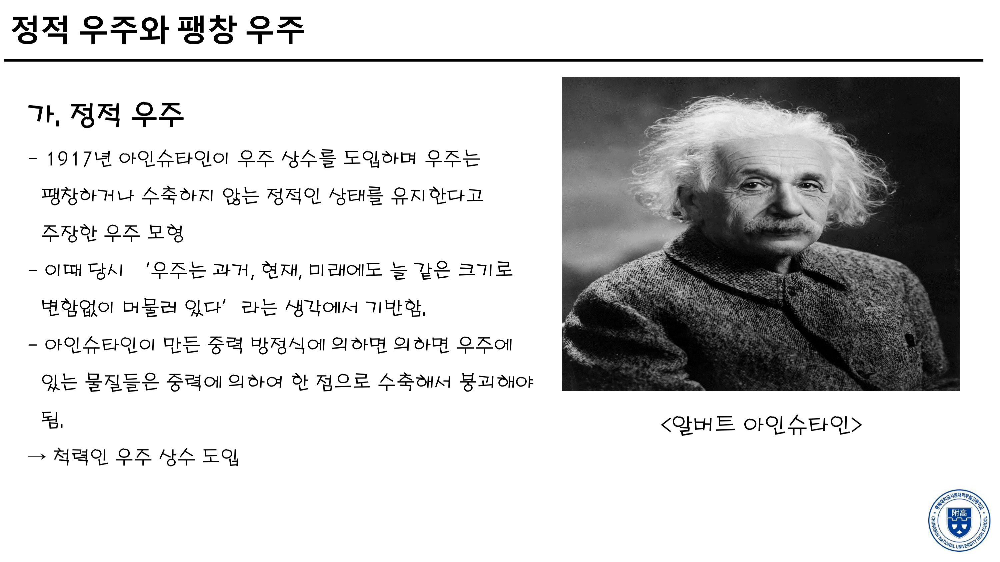
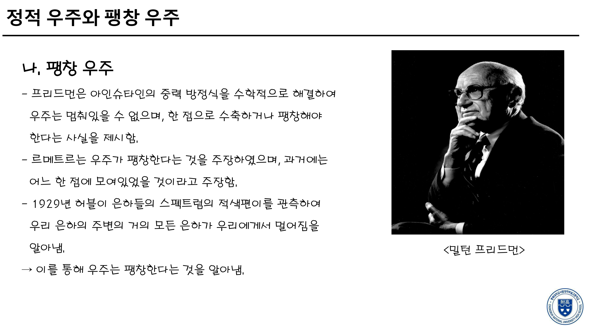
2. 도플러 효과와 적색 편이(Redshift) 및 후퇴 속도($v$) 계산 (PPT Slide 11~14)
(1) 도플러 효과(Doppler Effect)와 파장의 변화 원리 (수업 PPT Slide 12)
파동을 방출하는 파원(은하, 자동차)과 관측자가 상대 운동할 때 파동의 파장과 진동수가 변하는 현상입니다. 도로에서 구급차가 다가올 때는 사이렌 소리가 높은 음으로 들리다가, 멀어질 때는 낮은 음으로 바뀌는 현상과 같은 원리입니다.
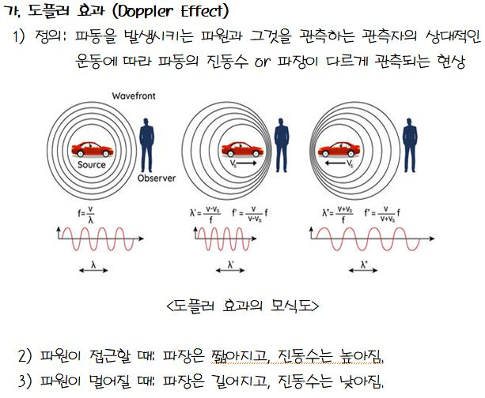
(2) 적색 편이량($z$)과 후퇴 속도($v$) 계산 공식 (수업 PPT Slide 13 · 수능 필수!)
💡 의미 해석: 적색 편이량 $z$는 단위가 없는 무차원 수치이며, 파장의 상대적 증가율을 나타냅니다. 후퇴 속도($v$)가 빛의 속도($c$)에 비해 충분히 작을 때($v \ll c$) 위 도플러 근사 공식이 매우 정확하게 성립합니다.
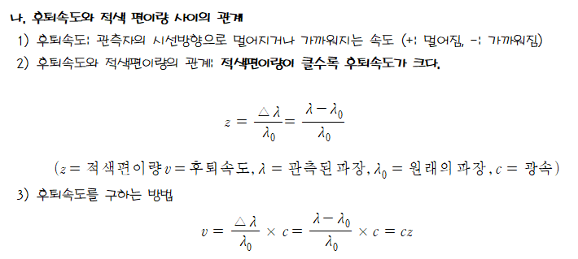
(3) 거리가 먼 은하일수록 적색 편이량이 커진다! (수업 PPT Slide 14)
동일한 원소(예: 칼슘 H·K선, 수소 흡수선)에 의해 생기는 흡수선 스펙트럼을 여러 외부 은하에서 비교해보면 다음과 같은 놀라운 규칙성이 발견됩니다:
- 1. 정지 상태 (연구실 실험): 기준 파장 $\lambda_0$에서 흡수선이 나타남.
- 2. 가까운 은하: 흡수선이 붉은색(장파장) 쪽으로 조금 이동함 ($\Delta\lambda$ 작음 ➔ 후퇴 속도 느림).
- 3. 매우 먼 은하: 흡수선이 붉은색 쪽으로 훨씬 많이 이동함 ($\Delta\lambda$ 큼 ➔ 후퇴 속도 대단히 빠름!).
➔ 즉, 은하의 거리가 멀수록 후퇴 속도가 빠르다는 결정적 단서가 스펙트럼에 그대로 기록되어 있습니다!
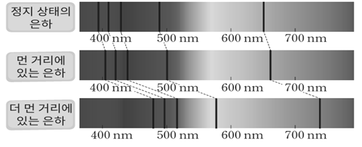
3. 허블-르메트르 법칙과 우주의 나이 · 크기 · 풍선 모형 (PPT Slide 15~18)
(1) 허블-르메트르 법칙 ($v = Hr$)과 그래프의 기울기 (수업 PPT Slide 15)
외부 은하의 후퇴 속도($v$)는 은하까지의 거리($r$)에 정비례합니다.
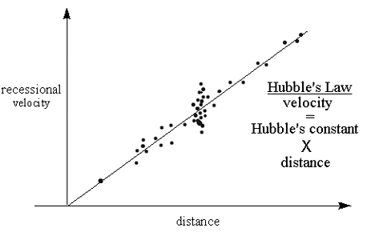
(2) 허블 상수의 최신 관측값과 물리적 의미 (수업 PPT Slide 16)
(참고: 국소 우주의 초신성 관측 결과는 약 $73\text{ km/s/Mpc}$로 측정되어 두 값 사이에 차이가 존재하는 '허블 텐션' 연구가 활발합니다.)
"은하 사이의 거리가 $1\text{ Mpc}$ 멀어질 때마다 후퇴 속도가 매초 약 $67.4\text{ km}$씩 증가한다!"
은하가 공간 속을 로켓처럼 날아가는 것이 아니라, 은하와 은하 사이의 우주 공간 자체가 매초 팽창하고 있는 것입니다.
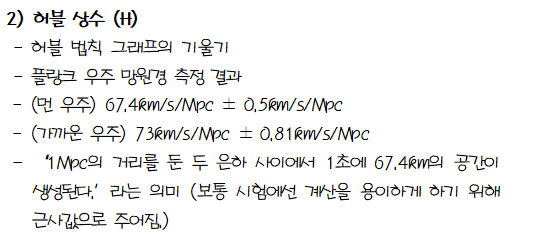
(3) 우주의 나이($T = 1/H$)와 관측 가능한 우주의 크기($R = c/H$) (수업 PPT Slide 17)
우주가 시작된 직후부터 일정한 속도로 팽창해 왔다고 가정하면, 거리 = 속력 × 시간($r = v \times T$) 공식에서:
후퇴 속도가 빛의 속도($v = c$)에 도달하는 경계까지의 거리를 계산하면:
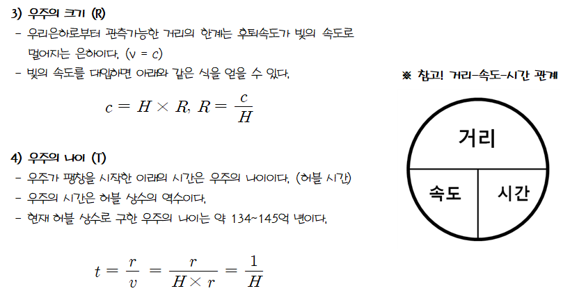
(4) 풍선 팽창 모형과 "우주 팽창의 중심은 어디인가?" (수업 PPT Slide 18)
풍선 표면에 여러 개의 동전(은하)을 붙인 뒤 풍선을 불어 팽창시키는 모형을 관찰해봅시다:
-
•
동전 자체의 크기는 변하지 않는다: 은하 내부나 태양계는 중력 및 전자기력으로 단단히 묶여 있으므로 공간이 팽창해도 크기가 커지지 않습니다.
-
•
동전 사이의 거리가 멀어진다: 풍선 표면(공간 자체)이 늘어나면서 동전 사이의 거리가 멀어집니다.
-
•
⭐ 팽창의 중심은 없다! 풍선의 2차원 표면 위에는 중심점이 없습니다. 어떤 동전에 서서 관측하더라도 항상 주변 동전들이 거리에 비례하여 멀어지는 것으로 관측됩니다!
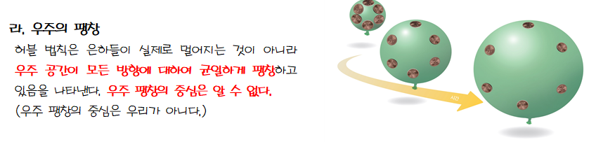
4. 외부 은하 관측 자료 분석 및 정량 계산 실습 (수업 PPT Slide 19~21)
[데이터 정리 표] 은하별 파장 변화량 · 적색 편이량 · 후퇴 속도
| 은하 | 거리 ($r$) | 관측 파장 ($\lambda$) | 파장 변화량 ($\Delta\lambda = \lambda - \lambda_0$) | 적색 편이량 ($z = \Delta\lambda/\lambda_0$) | 후퇴 속도 ($v = c \times z$) |
|---|---|---|---|---|---|
| 은하 (가) | 300 Mpc | 411 nm | 16 nm (411 - 395) | 0.041 (16 / 395) | 약 12,300 km/s (3×10⁵ × 0.041) |
| 은하 (나) | 430 Mpc | 421 nm | 26 nm (421 - 395) | 0.066 (26 / 395) | 약 19,800 km/s (3×10⁵ × 0.066) |
| 은하 (다) | 770 Mpc | 439 nm | 44 nm (439 - 395) | 0.111 (44 / 395) | 약 33,300 km/s (3×10⁵ × 0.111) |
거리 $r$이 300 Mpc ➔ 430 Mpc ➔ 770 Mpc로 멀어짐에 따라 후퇴 속도 $v$도 12,300 km/s ➔ 19,800 km/s ➔ 33,300 km/s로 비례하여 증가합니다. 즉, 은하의 후퇴 속도는 은하까지의 거리에 정비례($v \propto r$)하며 허블-르메트르 법칙이 성립함을 직접 확인할 수 있습니다.
우리은하와 은하 (나), (다)가 일직선상에 있다고 가정할 때, 은하 (나)에서 본 은하 (다)까지의 거리는 $770 - 430 = 340\text{ Mpc}$입니다. 은하 (나)의 관측자가 보더라도 은하 (다)의 스펙트럼에서 적색 편이가 관측되며, 후퇴 속도는 $33,300 - 19,800 = 13,500\text{ km/s}$로 멀어지는 것으로 관측됩니다. 즉, 우리은하뿐만 아니라 어떤 은하에서 보더라도 똑같이 주변 은하들이 멀어지는 팽창 우주가 관측됩니다!
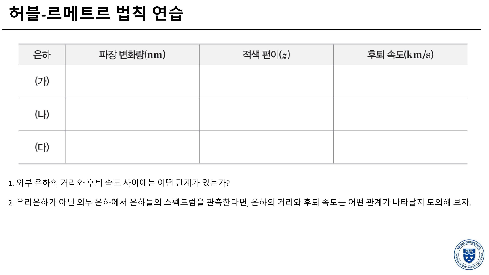
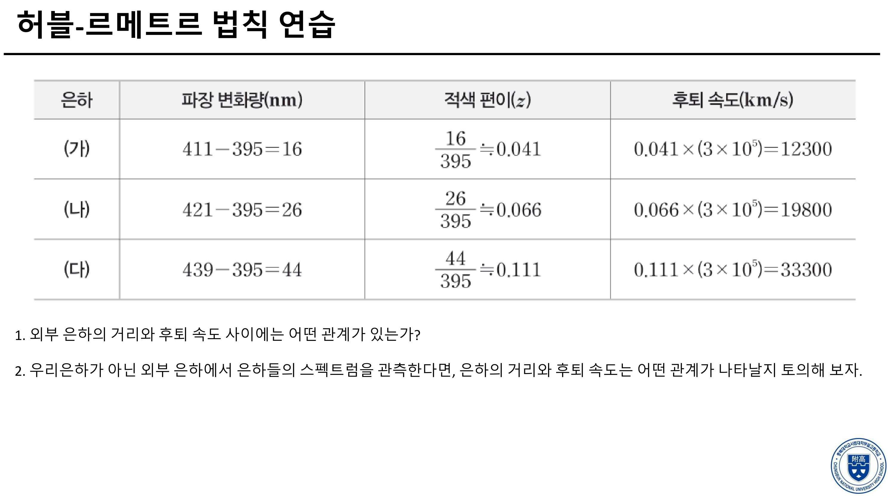
단원 개념 적용하기 & 실전 확인 문제
[교재 p.73 계산 적용] 정지 상태에서의 기준 파장($\lambda_0$)이 400 nm인 흡수선이 어떤 외부 은하 A의 스펙트럼에서 440 nm로 관측되었다. 빛의 속도 $c = 3 \times 10^5\text{ km/s}$, 허블 상수 $H = 75\text{ km/s/Mpc}$ 일 때, 은하 A의 (1) 적색 편이량 $z$, (2) 후퇴 속도 $v$, (3) 은하까지의 거리 $r$을 구하시오.
[수업 PPT & 교재 종합] 만약 정밀 관측을 통해 측정된 허블 상수($H$)의 값이 기존에 알려진 값보다 더 큰 것으로 판명되었다면, 이로부터 추정되는 (1) 우주의 나이($T$), (2) 관측 가능한 우주의 크기($R$), (3) 거리-후퇴속도 그래프의 기울기는 각각 어떻게 달라지는가?
[교재 p.74 & PPT Slide 21 적용] 우리은하에서 볼 때 일직선상의 같은 방향에 있는 은하 A(거리 100 Mpc, 후퇴 속도 7,000 km/s)와 은하 B(거리 300 Mpc, 후퇴 속도 21,000 km/s)가 있다. 은하 A에 있는 관측자가 은하 B를 관측한다면 은하 B의 후퇴 속도는 얼마로 관측되며, 이것이 의미하는 우주론적 원리는 무엇인가?